专题4.3 多边形和圆的初步认识（举一反三讲义）
【北师大版2024】

【题型1 多边形的概念与分类】 1
【题型2 正多边形的概念辨析】 4
【题型3 多边形截角后的边数问题】 6
【题型4 多边形的周长与面积问题】 8
【题型5 多边形对角线的条数问题】 10
【题型6 对角线分成的三角形个数问题】 12
【题型7 圆的基本概念辨析】 15
【题型8 圆的周长与面积问题】 17
【题型9 圆心角概念辨析及简单运算】 19
 知识点1 多边形及有关概念
知识点1 多边形及有关概念
1. 三角形、四边形、五边形、六边形等都是多边形，它们都是由若干条不在同一直线上的线段首尾顺次相连组成的封闭平面图形．
2. 如下图，在多边形ABCDE中，点A，B，C，D，E是多边形的顶点；线段AB，BC，CD，DE，EA是多边形的边；∠EAB，∠ABC，∠BCD，∠CDE，∠DEA是多边形的内角（可简称为多边形的角）；AC，AD都是连接不相邻两个顶点的线段，像这样的线段叫作多边形的对角线．

3. 各边相等、各角也相等的多边形叫作正多边形．
【题型1 多边形的概念与分类】
【例1】如图所示的多边形分别是 、 、 、 和 ．
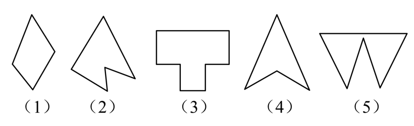
【答案】 四边形 五边形 八边形 四边形 五边形
【分析】根据多边形的定义，数出边数即可求解．
【详解】解：如图所示的多边形分别是（1）四边形；（2）五边形；（3）八边形；（4）四边形；（5）五边形；
故答案为：（1）四边形；（2）五边形；（3）八边形；（4）四边形；（5）五边形．
【点睛】本题考查了多边形的定义，熟练掌握多边形的定义是解题的关键．由在同一平面且不在同一直线上的三条或三条以上的 线段 首尾顺次连接且不 相交 所组成的封闭图形叫做多边形．
【变式1-1】（24-25七年级下·全国·课后作业）下列图形中不是多边形的是（ ）
A．
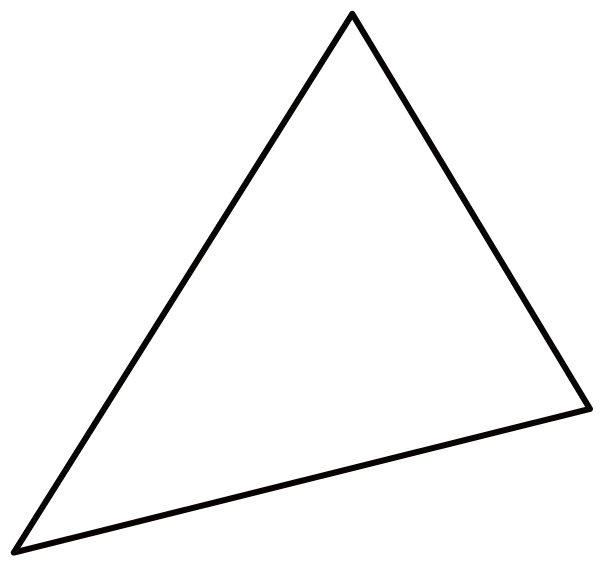
B．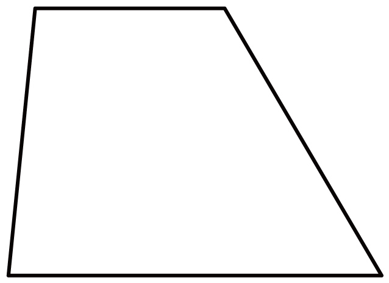
C． D．
D．
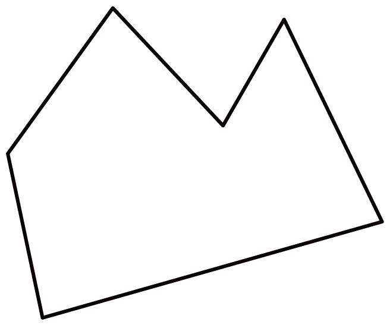
【答案】C
【分析】本题主要考查多边形的定义，熟练掌握多边形的定义是解题的关键．根据多边形的定义即可得到答案．
【详解】
解：是三边形，是多边形，故选项A不符合题意；
是四边形，是多边形，故选项B不符合题意；
不是多边形，故选项C符合题意；
是六边形，是多边形，故选项D不符合题意；
故选：C．
【变式1-2】仔细数一数图中有几个直角三角形，几个正方形，几个长方形．
【答案】32个直角三角形，7个正方形，4个长方形
【分析】应按照一定规律来找：先找单个的，再找两两组合的，四个组合的．
【详解】解：根据图示图中共有：32个直角三角形，7个正方形，4个长方形．
【点睛】本题考查了几何图形，需注意正方形指的是四条边相等，四个角是直角的四边形，长方形指长与宽不相等的长方形．
【变式1-3】把图中的直角三角形和直角梯形相等的边拼合在一起，画出所有拼成的图形．
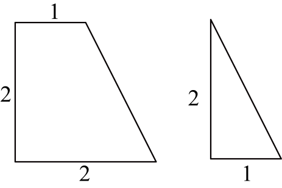
【答案】见解析
【分析】本题考查的是图形的拼接，根据平面图形的特点进行拼接即可．
【详解】解：如图，拼成的图形如下：
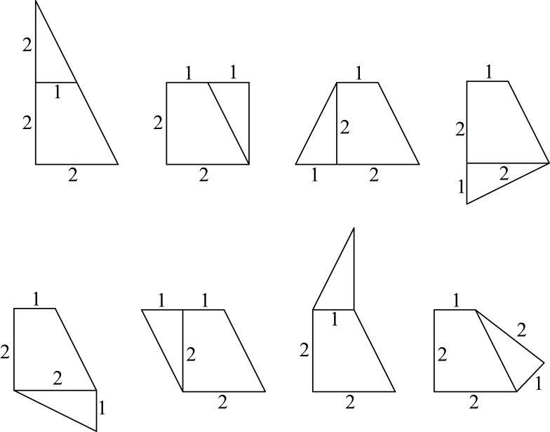
【题型2 正多边形的概念辨析】
【例2】对于正多边形，下列说法正确的是（ ）
A．正多边形的边都相等，内角都相等；
B．各边相等的多边形是正多边形；
C．各角相等的多边形是正多边形；
D．由正多边形构成的多边形是正多边形；
【答案】A
【分析】A. 由正多边形的性质可得
B. 举反例判断即可
C. 举反例判断即可
D. 举反例判断即可
【详解】A. 由正多边形的性质：各边相等，各角相等，正确
B. 菱形不是正方形，错误
C. 矩形不是正方形，错误
D. 正方形与边长相等的等边三角形拼成的五边形不是正多边形，错误
故选：A．
【点睛】本题考查了正多边形的定义：平面内各边相等，各角相等的多边形是正多边形，准确理解定义及性质是解题关键．
【变式2-1】下列图形中，是正八边形的是（ ）
A．
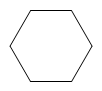
B．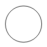
C．
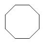
D．
【答案】C
【分析】根据正多边形的定义判断即可．
【详解】解：由正八边形的定义：即正八边形有八条边，且每个边都相等，每个角都相等，由此可知，C选项中的图形是正八边形，
故选：C．
【点睛】本题考查了正多边形的定义，正多边形就是各边相等，各角也相等的多边形．
【变式2-2】已知正六边形的周长是36cm，则这个多边形的边长等于 cm．
【答案】6
【分析】本题考查正多边形的定义，根据每条边都相等，每个内角都相等的多边形叫正多边形求解即可得到答案，熟知在平面内，由一些线段首尾顺次相接组成的图形叫做多边形是解题的关键．
【详解】解：∵正六边形的周长是36cm，
∴这个多边形的边长为36÷6=6cm，
故答案为：6．
【变式2-3】下列说法中，正确的个数是（ ）
①等腰三角形是正多边形；
②等边三角形是正多边形；
③长方形是正多边形；
④正方形是正多边形．
A．1 B．2 C．3 D．4
【答案】B
【分析】本题考查正多边形的定义，根据各个边各个内角都相等的图形叫正多边形直接逐个判断即可得到答案；
【详解】解：由题意可得，
等腰三角形不是正多边形，故①错误不符合题意，
等边三角形是正多边形，故②符合题意，
长方形不是正多边形，故③错误不符合题意，
正方形是正多边形，故④符合题意，
故选：B．
【题型3 多边形截角后的边数问题】
【例3】把一张形状是四边形的纸片剪去其中某一个角，剩下的部分的形状不可能是（ ）
A．三角形 B．四边形 C．五边形 D．六边形
【答案】D
【分析】本题考查了多边形．把一张形状是四边形的纸片剪去其中某一个角，剩下的部分的形状可能是三角形或四边形或五边形．
【详解】解：把一张形状是四边形的纸片剪去其中某一个角，剩下的部分的形状可能是三角形或四边形或五边形，不可能是六边形．
故选：D．
【变式3-1】（24-25七年级上·全国·课后作业）如图，从五边形纸片ABCDE中剪去一个三角形，剩余部分是（ ）
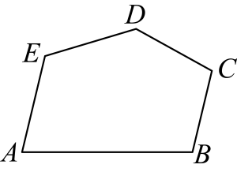
A．四边形 B．五边形 C．六边形 D．以上都有可能
【答案】D
【分析】本题考查了多边形的截法．分为三种情况，画出图形，解答即可．
【详解】解：如图，
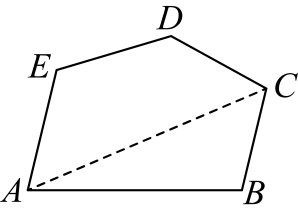
，剩余图形是四边形；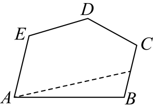
，剩余图形是五边形；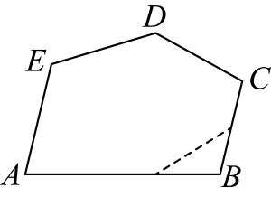
，剩余图形是六边形；故选D．
【变式3-2】一个2022边形，减去一个角后，所得多边形的边数为 ．
【答案】2021或2022或2023
【分析】本题考查的知识点是多边形的概念，解题关键是列举出所有可能的情况．一个多边形剪去一个角后，分三种情况：①边数可能减少1，②边数可能增加1，③边数可能不变．
【详解】解：一个2022边形，减去一个角后，所得多边形的边数为2021，2022，2023
故答案为：2021，2022，2023．
【变式3-3】如图，四边形ABCD去掉∠C后，剩下的新图形是几边形？请画出图形．

【答案】三角形或四边形或五边形，图形见解析．
【分析】设线段BC上一点为N（点N不与点B，点C重合），线段CD上一点为M（点M不与点C，点D重合），分三种情况讨论：沿直线BD切割；沿直线MN切割；沿直线DN或BM切割．
【详解】设线段BC上一点为N（点N不与点B，点C重合），线段CD上一点为M（点M不与点C，点D重合）．
①如图所示，沿直线BD切割，得到△ABD，新图形为三角形．
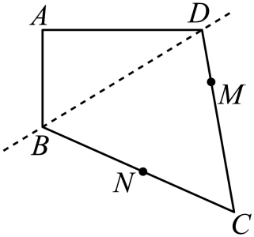
②如图所示，沿直线MN切割，得到五边形ABNMD，新图形为五边形．
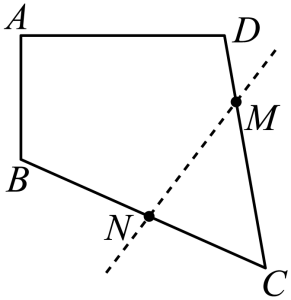
③如图所示，沿直线DN或BM切割，得到四边形ABND或四边形ABMD，新图形为四边形．
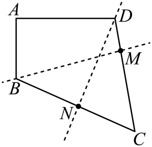
综上所述，新图形是三角形或四边形或五边形．
【点睛】本题主要考查多边形，能根据题意分类讨论是解题的关键．
【题型4 多边形的周长与面积问题】
【例4】若一个正n边形的边长为2cm，则其周长为
【答案】2ncm/2n厘米
【分析】根据正n边形的周长公式即可得到结论．
【详解】解：∵正n边形的边长相等，且边长为2cm，
∴其周长为2ncm，
故答案为：2ncm．
【点睛】本题考查的是正多边形和圆，熟记正多边形的定义是解答此题的关键．
【变式4-1】如图，小个方格都是边长为1的正方形，图中四边形ABCD的面积为 ．
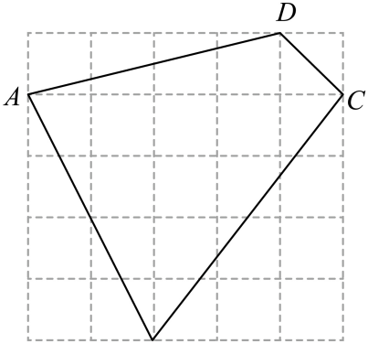
【答案】1212
【分析】利用大正方形的面积减去四边形周围的小三角形面积即可．
【详解】解：四边形ABCD的面积为：
5×5−12×4×1−12×1×1−12×4×2−12×3×4=1212，
故答案为：1212．
【点睛】此题主要考查了四边形面积求法，掌握割补法是解题的关键．
【变式4-2】如图所示的方格（每个小方格面积为1）中阴影部分为两个轴对称型的汉字，图①中汉字面积为S1，图②中汉字的面积为S2，则S1−S2的值为（ ）
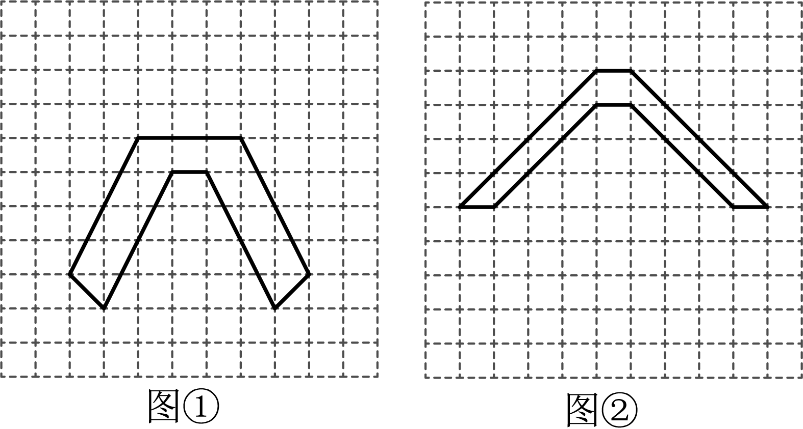
A．1 B．2 C．3 D．6
【答案】D
【分析】利用割补法分别求出S1和S2的面积，再作差即可．
【详解】解：如图，
S1＝5×7−12×2×4×2−12×1×1×2−12×（1+5）×4
＝35−8−1−12
＝14，
S2＝4×9−12×4×4×2−12×（1+7）×3
＝36−16−12
＝8，
∴S1−S2＝6．
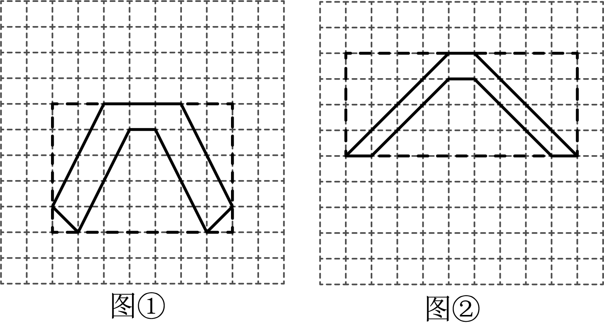
故选：D．
【点睛】本题主要考查不规则图形的面积，掌握割补法求不规则图形的面积是解题关键．
【变式4-3】（24-25七年级上·河南郑州·开学考试）【图形的剪切】将一个边长是30厘米的正方形，在四个角各剪去一个边长为3厘米的小正方形，那么它的周长与原来相比（ ）
A．减少 B．不变 C．增加 D．无法确定
【答案】B
【分析】本题考查了周长的求解，原正方形边长为30厘米，剪去四个角的小正方形后，虽然原边长被截短，但新增了与原截短部分等长的边，故周长不变．
【详解】解：如图：
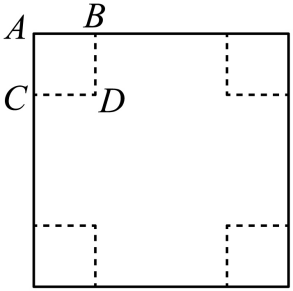
因为剪去一个小正方形ABCD后，剪掉了AB与AC的长度，但又多出了BD与CD的长度，并且AB=CD=BD=AC，
同样在其它的三个角剪正方形也是这样的，所以它的周长与原来相比不变，
故选：B．
【题型5 多边形对角线的条数问题】
【例5】（24-25八年级上·青海西宁·期中）一个多边形从一个顶点处可以引出7条对角线，这个多边形的边数是（ ）
A．6 B．7 C．8 D．10
【答案】D
【分析】本题考查了多边形的对角线，熟练掌握对角线条数的计算方法是解题的关键．
一个n边形从一个顶点处可以引出n−3条对角线，由此计算即可．
【详解】解：一个n边形从一个顶点处可以引出n−3条对角线，
∴n−3=7，
∴n=10，
故选：D．
【变式5-1】六边形对角线的条数是 ．
【答案】9
【分析】本题考查了多边形对角线条数的知识，熟练掌握以上知识是解题的关键．
根据多边形所有对角线的条数公式nn−32求解即可．
【详解】解：根据多边形所有对角线的条数为nn−32，
∴六边形的对角线的条数为66−32=9．
故答案为：9．
【变式5-2】（24-25八年级上·湖南湘西·期末）过某多边形的一个顶点可以引2024条对角线，则这个多边形的边数是 条
【答案】2027
【分析】本题可根据多边形对角线的相关性质来求解多边形的边数，即根据过n边形的一个顶点可引出(n−3)条对角线这一关系建立方程求解．本题主要考查了多边形对角线的性质，熟练掌握过n边形一个顶点可引出(n−3)条对角线是解题的关键．
【详解】解：设这个多边形的边数为n．
∵ 过n边形的一个顶点可以引(n−3)条对角线，且过该多边形的一个顶点可以引2024条对角线
∴ n−3=2024
∴ n=2024+3=2027
故答案为：2027．
【变式5-3】（24-25七年级下·吉林长春·期中）若一个多边形的对角线条数恰好为边数的3倍，则这个多边形的边数为 ．
【答案】9
【分析】本题考查多边形的对角线，解题的关键是熟记n边形的对角线的条数为n(n−3)2，根据多边形的对角线条数恰好为边数的3倍，列出方程求解即可．
【详解】解：设多边形的边数为n，
则n(n−3)2n=3，
解得：n=9．
故答案为：9．
【题型6 对角线分成的三角形个数问题】
【例6】（24-25七年级上·山东枣庄·期末）在研究多边形的几何性质时，我们通常把它分割成几个三角形进行研究．从一个多边形的一个顶点引出的所有对角线，把它分割成5个三角形，则这个多边形的边数是 ．
【答案】7
【分析】本题考查了多边形的对角线，熟练掌握从n多边形的一个顶点引出的所有对角线，把它分割成n−2个三角形是解题的关键．
从n多边形的一个顶点引出的所有对角线，把它分割成n−2个三角形，由此计算即可．
【详解】解：从一个多边形的一个顶点引出的所有对角线，把它分割成5个三角形，则这个多边形的边数是5+2=7，
故答案为：7．
【变式6-1】（24-25六年级下·山东烟台·期中）自八边形一个顶点能引（ ）条对角线，这些对角线可将八边形分成（ ）个三角形．
A．4，5 B．5，6 C．6，7 D．7，8
【答案】B
【分析】本题考查了多边形的相关概念，解题关键是画出图形求解．
直接画出图形求解．
【详解】解：如图，
自八边形一个顶点能引5条对角线，这些对角线可将八边形分成6个三角形，
故选：B．
【变式6-2】探究归纳题：

(1)如图1，经过四边形的一个顶点可以作 条对角线，它把四边形分成 个三角形；
(2)如图2，经过五边形的一个顶点可以作 条对角线，它把五边形分成 个三角形；
(3)探索归纳：对于n边形n>3，过一个顶点可以作 条对角线，它把n边形分成 个三角形；（用含n的式子表示）
(4)如果经过多边形的一个顶点可以作100条对角线，那么这个多边形的边数为 ．
【答案】(1)1；2
(2)2；3
(3)n−3；n−2
(4)103
【分析】本题考查多边形的对角线、边及三角形分割等规律探究．
（1）根据题意画出对图中的一个顶点的对角线即可得到结论；
（2）根据题意画出对图中的一个顶点的对角线即可得到结论；
（3）根据（1）（2）中的结论，可找到规律即可得到结论；
（4）将100代入（3）的结论中即可得到答案．
【详解】（1）解：如图所示，经过1个顶点可以作1条对角线，它把四边形分为2个三角形，
故答案为：1，2；
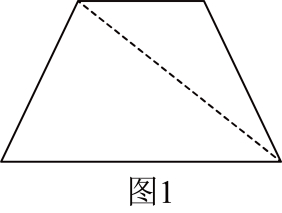
（2）解：如图所示，经过五边形一个顶点，共有2条对角线，将这个多边形分为3个三角形；
故答案为：2，3．
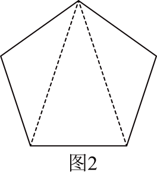
（3）解：∵经过四边形的一个顶点可以作4−3=1条对角线，它把四边形分成4−2=2个三角形；
经过五边形的一个顶点可以作5−3=2条对角线，它把五边形分成5−2=3个三角形；
经过六边形的一个顶点可以作6−3=3条对角线，它把六边形分成6−2=4个三角形；
经过七边形的一个顶点可以作7−3=4条对角线，它把七边形分成7−2=5个三角形；
……
∴经过n边形的一个顶点可以作n−3条对角线，它把n边形分成n−2个三角形；
故答案为：n−3，n−2．
（4）∵过多边形的一个顶点可以作100条对角线，
∴根据（3）中结论可得，n−3=100，
∴n=103，
故答案为：103．
【变式6-3】（2025·陕西西安·模拟预测）数学实践课上，小郑将五边形区域分割成若干个三角形，他在五边形内取一定数量的点，连同五边形的5个顶点，逐步连接这些点，保证所有连线不再相交产生新的点，直到五边形内所有区域都变成三角形．如图当五边形内有1个点时，可分得5个三角形；当五边形内有2个点时，可分得7个三角形(不计被分割的三角形)．当五边形内有n个点时，可分得三角形的个数为 ．
【答案】2n+3
【分析】本题主要考查了图形变化的规律，能根据所给图形发现三角形个数变化的规律是解题的关键．根据所给图形，依次求出图形中三角形的个数，发现规律当五边形内有n个点时，可分得的三角形的个数为(2n+3)个，即可解决问题．
【详解】解：由所给图形可知，
当五边形内有1个点时，可分得的三角形的个数为：5=1×2+3；
当五边形内有2个点时，可分得的三角形的个数为：7=2×2+3；
当五边形内有3个点时，可分得的三角形的个数为：9=3×2+3；
…，
所以当五边形内有n个点时，可分得的三角形的个数为(2n+3)个．
故答案为：2n+3．
知识点2 圆
1. 如下图，平面上，一条线段OA绕着它固定的一个端点O旋转一周，另一个端点A所形成的图形叫作圆．固定的端点O称为圆心，线段OA称为半径．

2. 圆上任意两点A，B间的部分叫作圆弧，简称弧，记作AB，读作“圆弧AB”或“弧AB”；由一条弧AB和经过这条弧的端点的两条半径OA，OB所组成的图形叫作扇形；顶点在圆心的角叫作圆心角．
【题型7 圆的基本概念辨析】
【例7】（2025·江苏连云港·二模）一张圆形的纸，要想找到它的圆心，至少要对折（ ）次．
A．1 B．2 C．4 D．8
【答案】B
【分析】本题主要考查了找圆心，沿不同的折痕把圆对折两次，这两条折痕的交点即为圆心，据此可得答案．
【详解】解：∵圆的圆心一定在其直径上，
∴沿不同的折痕把圆对折两次，这两条折痕的交点即为圆心，
∴一张圆形的纸，要想找到它的圆心，至少要对折2次，
故选：B．
【变式7-1】下列说法正确的是（ ）
A．圆上任意两点间的部分叫作圆弧
B．圆上任意两点间的线段叫作弧
C．圆上任意两点间的线段长度叫作弧
D．任意两点间的部分叫作弧
【答案】A
【分析】此题考查了圆弧的认识．根据：圆上任意两点间的部分叫做圆弧，逐一判断即可．
【详解】解：圆上任意两点间的部分叫做圆弧，圆上任意两点间的线段叫作弦．
观察四个选项，只有选项A说法正确，
故选：A．
【变式7-2】（2025·河北沧州·模拟预测）如图，已知四条弧线AB⏜，CD⏜，EF⏜，GH⏜，点P在其中一条弧线所在的圆上，则点P在（ ）
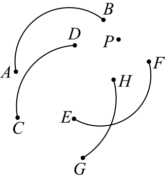
AB所在的圆上 B．CD所在的圆上
C．EF所在的圆上 D．GH所在的圆上
【答案】A
【分析】本题考查了圆的特征，把各弧延长即可判断．
【详解】解：如图，
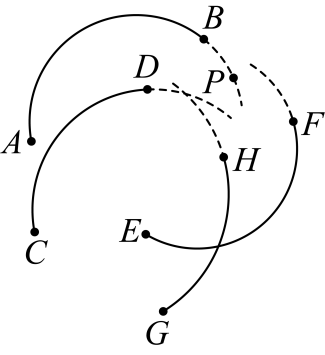
故选A．
【变式7-3】（2025·湖南娄底·三模）“转化”是一种重要的解决问题策略，在我们数学学习中经常会运用到．例如探索圆的面积计算公式时，许多同学会将圆形纸片剪成16等份，拼成一个近似的平行四边形（如图①），然后推导出圆的面积计算方法．小亮在研究时，将圆形纸片剪成16等份，拼成一个近似的梯形（如图②）．请仔细观察拼成的这个梯形，梯形的上底与下底的和与梯形的高分别是（ ）
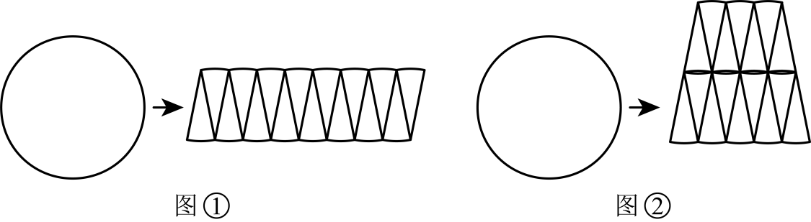
A．圆周长，圆的半径 B．圆周长，圆的直径
C．圆周长的一半，圆的半径 D．圆周长的一半，圆的直径
【答案】D
【分析】本题考查圆的面积的推算，观察图形可知梯形的上底与下底的和为圆周长的一半，梯形的高为圆的直径，据此解答．
【详解】解：由图可得梯形的上底与下底的和为圆周长的一半，梯形的高为圆的直径，
故选：D．
【题型8 圆的周长与面积问题】
【例8】（25-26八年级上·全国·单元测试）如图，某公园计划砌一个喷水池，有甲、乙两种方案，若外圆的直径相等，水池边沿的宽度和高度一样，你认为砌水池边沿（ ）

A．甲需要的材料多 B．乙需要的材料多
C．甲、乙需要的材料一样多 D．不确定
【答案】C
【分析】此题考查了圆的周长的应用．根据圆的周长公式，将每个圆的周长计算出来，找到周长的关系即可．
【详解】解：设大圆的直径是d，图乙中三个小圆的直径分别为：d1,d2,d3,
∴d1+d2+d3=d
根据圆周长公式，得图甲中，需要2πd；
图乙中，需要πd+πd1+πd2+πd3=πd+πd1+d2+d3=2πd
∴甲、乙需要的材料一样多，
故选：C．
【变式8-1】（24-25七年级上·浙江绍兴·开学考试）如图，周长为12.56厘米的圆的面积与长方形的面积相等，则阴影部分的面积与圆面积的比是 ．
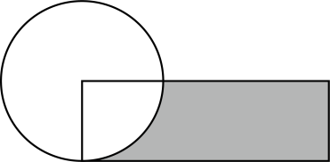
【答案】3:4
【分析】本题考查了求圆的面积，根据：r=C÷π÷2，可先求出圆的半径，进而求出圆的面积即是长方形的面积，圆的面积×34就是阴影部分的面积，再分别算出圆面积和阴影部分的面积，再求出它们的比．
【详解】解：半径：12.56÷3.14÷2=2（厘米)
圆面积为3.14×22=12.56（平方厘米）
阴影部分的面积为3.14×22×34
=3.14×3
=9.42（平方厘米)
则9.42:12.56=3:4．
故答案为：3:4
【变式8-2】如图两个半径都是4cm的圆外切于点C，一只蚂蚁由点A开始依A、B、C、D、E、F、C、G、A的顺序沿着圆周上的8段长度相等的路径绕行，蚂蚁在这8段路径上不断爬行，直到行走2006πcm后才停下来，则蚂蚁停的那一个点为（ ）
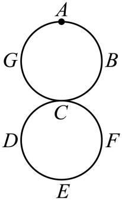
A．D点 B．E点 C．F点 D．G点
【答案】A
【分析】先求出蚂蚁爬行一圈所走的路程，再根据停下来时重复的圈数和余数，进而求解即可．
【详解】解：根据题意，每段长度为四分之一的圆周长，即14×2×π×4=2πcm，又知绕行8段为一循环，则爬行一圈的路程为2π×8=16πcm，
∵2006π=125×16π……6π，6π÷2π=3，
∴行走2006πcm后才停下来，那一个点为D点，
故选：A．
【点睛】本题考查圆的周长，图形类规律探究，解答的关键是理解题意，能根据爬行一圈的路程得出重复的圈数，再由余数确定最终的位置．
【变式8-3】（25-26七年级上·广东揭阳·期中）如图，M、N是表示两个曲边形的面积，那么M、N的大小关系是 ．

【答案】M=N
【分析】本题主要考查了扇形面积的计算，解决此题的关键是正确的计算；根据图形的规则先设空白部分的面积，再根据扇形的面积公式得到答案即可；
【详解】解：如图，两空白的面积相等，
设每一空白部分面积为x，圆的半径为r，
∵扇形的圆心角为90°，
∴扇形的面积为：14πr2，半圆的面积为：12πr22=18πr2，
∵x+M=18πr2，
∴x+N=14πr2−18πr2=18πr2，
∴x+M=x+N，
∴M=N
【题型9 圆心角概念辨析及简单运算】
【例9】若将一个圆等分成三个扇形，则其中一个扇形圆心角的度数为 °．
【答案】120
【分析】根据圆的性质计算，即可得到答案．
【详解】根据题意，将一个圆等分成三个扇形，则其中一个扇形圆心角的度数为：360°3=120°
故答案为：120．
【点睛】本题考查了圆的知识；解题的关键是熟练掌握圆和圆心角的性质，从而完成求解．
【变式9-1】（24-25九年级上·全国·假期作业）如图所示的圆中，下列各角是圆心角的是（ ）

A．∠ABC B．∠AOB C．∠OAB D．∠OCB
【答案】B
【分析】本题考查圆心角的概念，确定一个角是否是圆心角，只要看这个角的顶点是否在圆心上，顶点在圆心上的角就是圆心角，否则不是．
【详解】解：根据圆心角的概念，∠ABC、∠OAB、∠OCB的顶点分别是B、A、C，都不是圆心O，因此都不是圆心角．只有B中的∠AOB的顶点在圆心，是圆心角．
故选：B．
【变式9-2】把一个圆分成若干个扇形，若其中一个扇形占整个圆的25，那么这个扇形的圆心角为（ ）
A．144° B．288° C．72° D．36°
【答案】A
【分析】扇形占整个圆的25，即圆心角是360度的25，可求出答案．
【详解】∵在一个扇形统计图中，有一个扇形占整个圆的25，
∴这个扇形圆心角是：360°×25=144°．
故选A．
【点睛】本题考查扇形统计图及相关计算．在扇形统计图中，每部分占总体的百分比等于该部分所对应的扇形圆心角的度数与360°之比．
【变式9-3】如图，圆心角∠AOD=∠BOC=90°．
(1)判断∠AOC和∠BOD的数量关系，并说明理由；
(2)若∠COD=30°，求∠AOB的度数．
【答案】(1)∠AOC=∠BOD，见解析
(2)∠AOB=150°
【分析】（1）根据条件和∠AOD=∠AOC+∠COD，∠BOC=∠BOD+∠COD即可求解；
（2）根据第（1）问的结论和∠COD=30°即可求解．
【详解】（1）解：∠AOC=∠BOD；
∵∠AOD=∠AOC+∠COD，∠BOC=∠BOD+∠COD，∠AOD=∠BOC=90°，
∴∠AOC=∠BOD
（2）解：∵∠AOD=∠AOC+∠COD，∠BOC=∠BOD+∠COD，∠AOD=∠BOC=90°，∠COD=30°，
∴∠AOC=∠BOD=60°，
∴∠AOB=∠AOC+∠COD+∠BOD=60°+30°+60°=150°；
【点睛】本题考查了简单几何问题，灵活运用所学知识是关键．